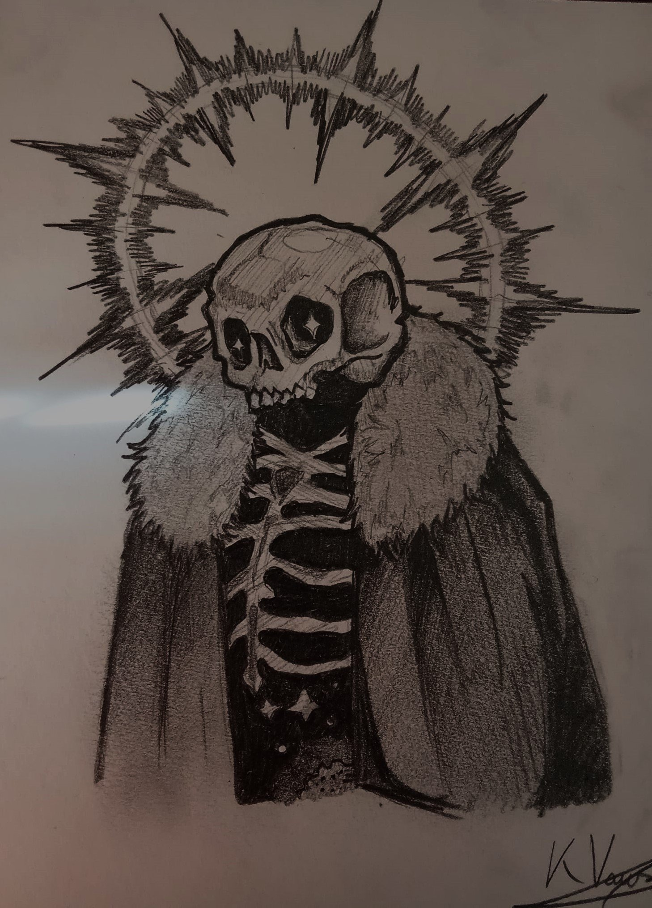
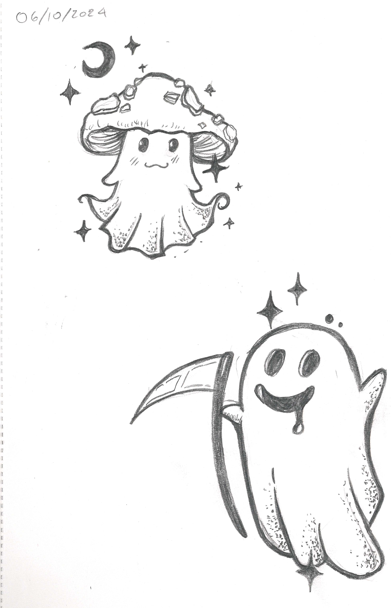
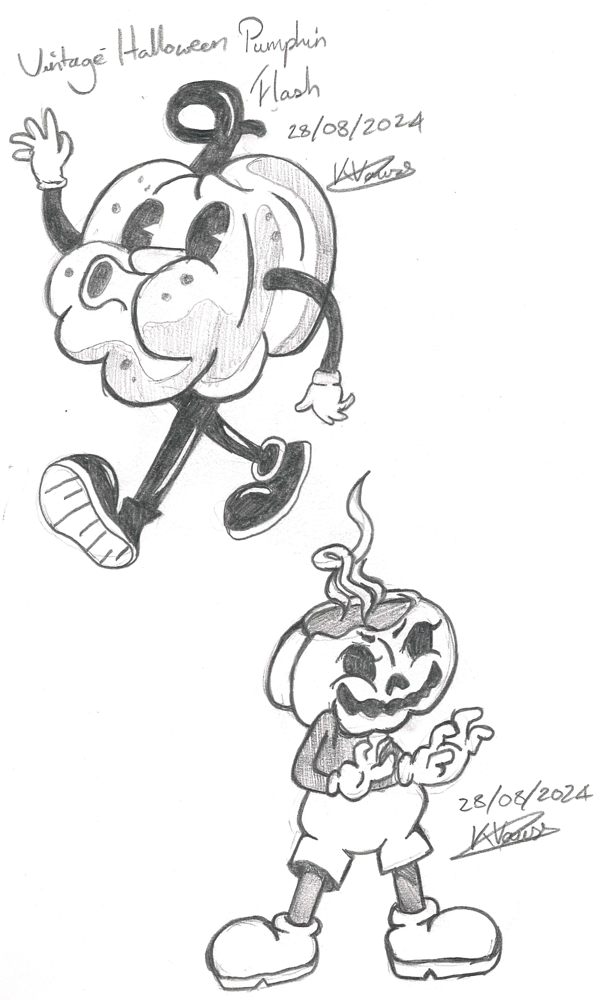
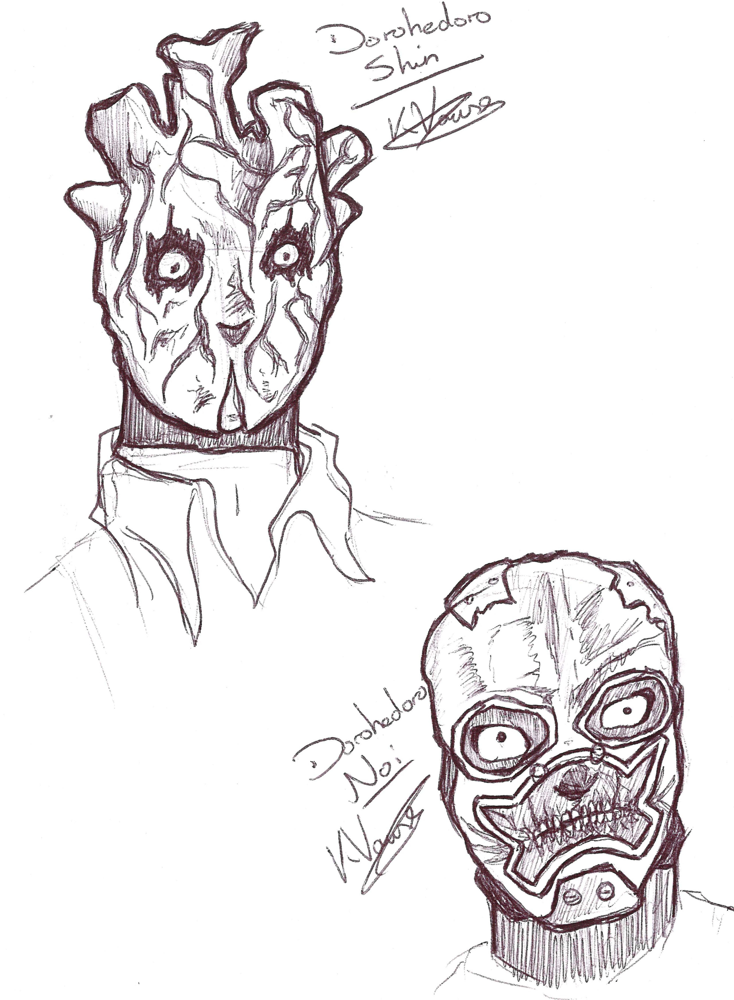
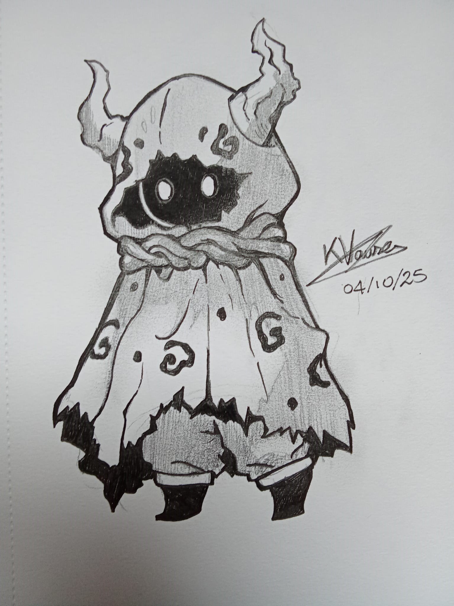
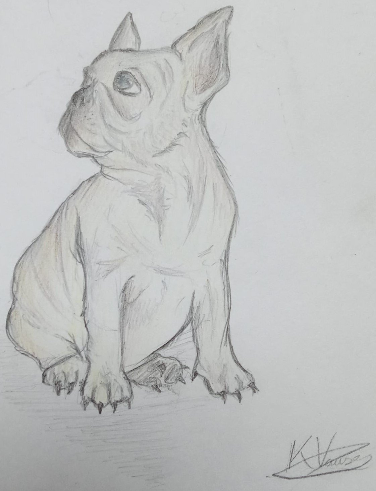
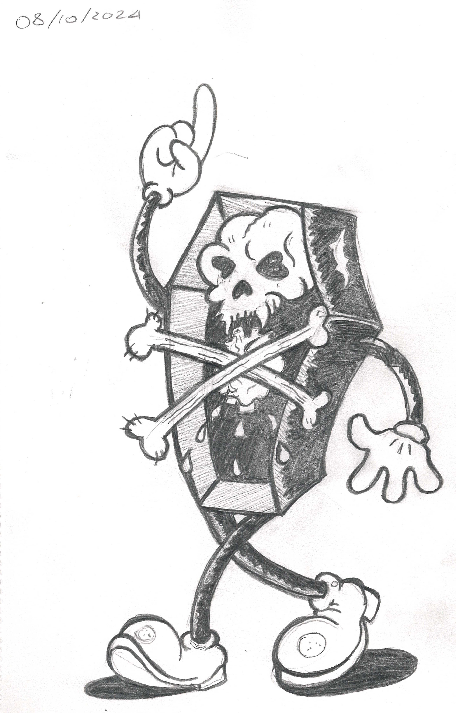

The Lich - Loop Hero
A quick 30 minute pencil sketch of The Lich from the game Loop Hero.
Traditional artist focusing on simplistic but bold illustration.

A quick 30 minute pencil sketch of The Lich from the game Loop Hero.

A study sheet of various mushrooms, coloured with watercolour pencils with a black ink outline.

Flash inspired ghost in a kawaii style, drawn with mechanical pencil and fine liner.

1940's style cartoons characters, medium used is mechanical pencil.

A rough ballpoint pen sketch of Shin from Dorohedoro.
Various animals drawn from photos in mechanical pencil.
Orginal character inspired by a halloween Jack o' lantern. Coloured with copic markers and outlined with fine liner.

Drawn from source material found on pinterest - https://share.google/mVNDWBEnnMGLmCSkJ

Taking inspiration from historical religious imagery and adding a dark, horror aspect to create an orginal character.

A pencil crayon sketch of a French bulldog drawn from a photo.

A mechanical pencil drawing of Coffin Creep created by artist Lance Inkwell.

I am a traditional artist based in the North West of England, primarily working with pencils, watercolour and ink. Whilst I specialize in bold, simplified cartoon-like styles such as the 1940s style characters shown in my portfolio, I pride myself on my ability to adapt to a range of mediums and styles. This can be seen in my Mushrooms and Animals pieces.
Available for commissions, collaborations, and freelance creative projects.